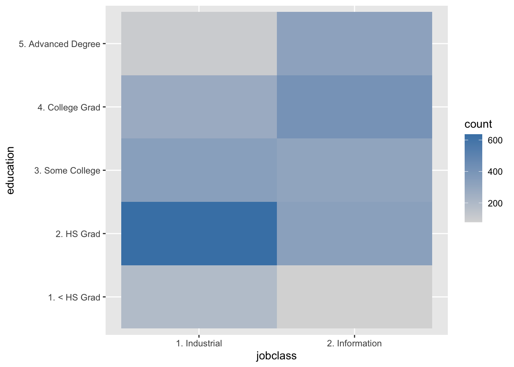
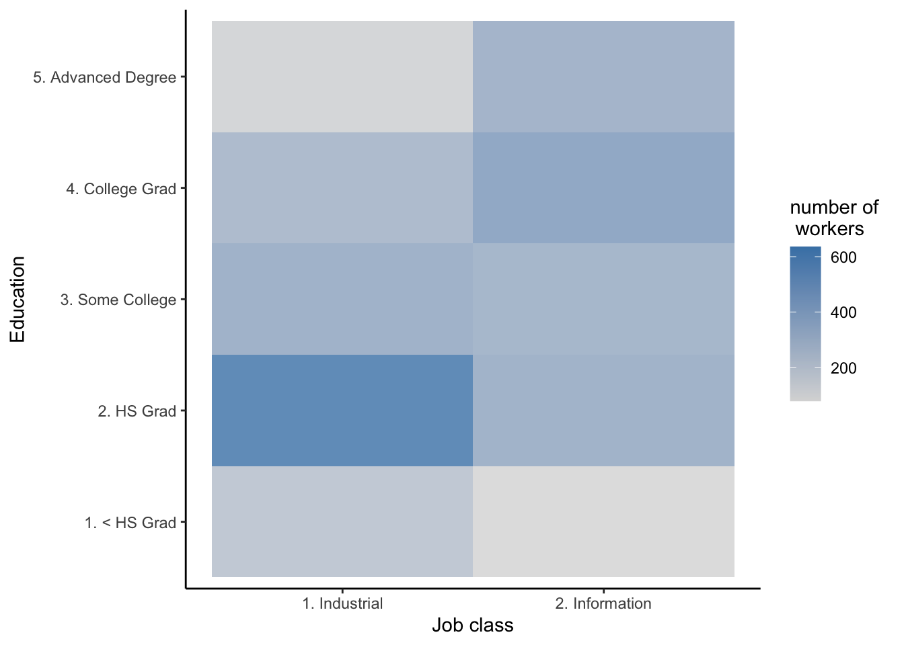

Chapter 2 Heatmap
You should use this method if the data is:
- Categorical
In this chapter you will learn how to do some simple data explorations for categorical variables using heatmaps with the function geom_bin2d()
Basic plot:
wage_df %>%
ggplot(aes(jobclass, education)) +
geom_bin2d() +
scale_fill_gradient(low = "gray85", high = "steelblue") 
Plot with some adjustments:
wage_df %>%
ggplot(aes(jobclass, education)) +
geom_bin2d(binwidth = c(1, 1), alpha = 0.8) +
theme_classic() +
scale_fill_gradient(low = "gray85", high = "steelblue") +
labs(fill = "number of\ workers", y = "Education", x = "Job class")